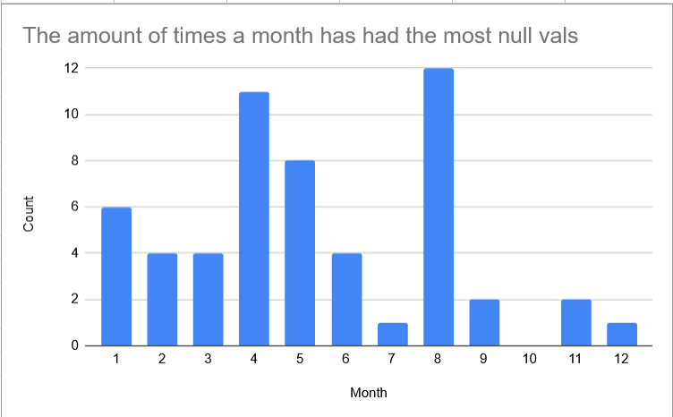
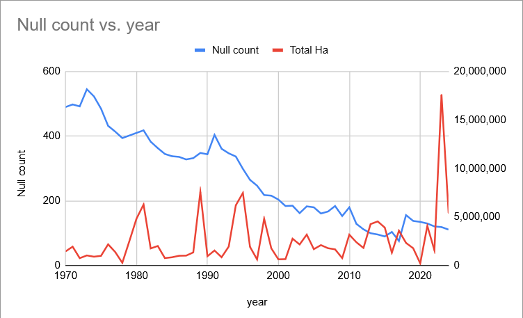

These are graphs of the null temperature values in my dataset. The first graph shows the times each month had the most null values in the year. The second shows the null values and the fire damage over the years.

